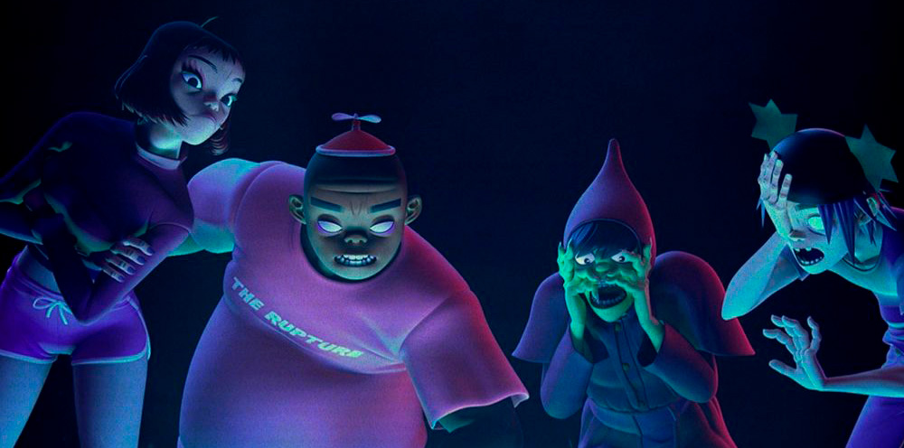

doc escapó con Cyborg Noodle en un submarino, pero fue capturado por EMI. Para ser liberado, aceptó como condición reunir de nuevo a la banda y lanzar un nuevo álbum de Gorillaz, por lo que regresó a Inglaterra con ese objetivo.
2D, tras ser devorado por la ballena Massive Dick, sobrevivió alimentándose de su carne en una isla desierta. Eventualmente fue rescatado y llevado a la Isla de Guadalupe en México, donde vacacionó hasta reunirse con Murdoc para trabajar en el nuevo proyecto musical. Russel, aún de tamaño gigante, fue adorado como una deidad en Corea del Norte. Cuando volvió a su tamaño normal, fue liberado y también se reintegró al grupo para la producción del próximo álbum.
NINJAS Y BALLENAS DEVORADORAS DE HOMBRES
Noodle despertó en Japón y durante un tiempo entrenó como ninja bajo la tutela del maestro Chiyoko. Durante este proceso, liberó accidentalmente al demonio Mazuu, pero milagrosamente y con mucha destreza logró derrotarlo cortándole la cabeza. Después, se envió a sí misma a Inglaterra en una caja de FedEx para reencontrarse con la banda y por fin ponerse manos a la obra.
Ya reunidos, Gorillaz comenzó la grabación de Humanz. En el video musical de Saturnz Barz, la banda visita una casa embrujada, donde son acosados por monstruos sobrenaturales, creando una atmósfera inquietante y surrealista.
En el video Strobelite, 2D y Noodle aparecen bailando en una discoteca, mientras Russel duerme y Murdoc mantiene un trato turbio con un extraño hombre en el bar. Estos videos reflejan la estética oscura y experimental del nuevo álbum.
Durante esta etapa, la banda realizó la gira mundial Humanz Tour, expandiendo su presencia global. Además, lanzaron su propio festival, Demon Dayz, un evento que celebraba su estilo musical y visual único. Gorillaz también publicó una revista oficial llamada G-Magazine, reforzando su identidad como banda virtual con contenido exclusivo para sus fanáticos. Su influencia volvió a ser reconocida al ganar el premio BRIT como “mejor banda británica”. En medio del éxito, Murdoc fue arrestado por un crimen no especificado y enviado a prisión. Este giro inesperado provocó incertidumbre en la banda, aunque el proyecto musical continuó su curso con nuevas direcciones creativas.
Tras el éxito de Humanz en 2017, Gorillaz decidió mantener su impulso creativo y lanzar un nuevo álbum en 2018 titulado The Now Now. Durante la gira de Humanz, Murdoc fue arrestado, por lo que la banda reclutó a Ace D. Copular, líder de The Gangreen Gang de The Powerpuff Girls, como su reemplazo temporal en el bajo. Noodle, fan de la serie en su infancia, apoyó su incorporación mientras la banda continuaba de gira y grababa el nuevo disco.
Se supo que Murdoc estaba encarcelado en la prisión británica Wormwood Scrubs, luego de haber sido incriminado por El Mierda, con quien había hecho negocios oscuros en el video de Strobelite. Mientras tanto, la banda seguía activa con sus proyectos y su nueva alineación temporal, dando continuidad a su música y actuaciones en vivo. Paralelamente, surgió la campaña interactiva #FreeMurdoc, donde los fans podían comunicarse con Murdoc a través de Messenger para ayudarlo a escapar de prisión. Murdoc enfrentó a otros prisioneros y fingió su muerte para generar drama, llamar la atención.
En medio del éxito, Murdoc fue arrestado por un crimen no especificado y enviado a prisión. Este giro inesperado provocó incertidumbre en la banda, aunque el proyecto musical continuó su curso con nuevas direcciones creativas. En ese mismo año, Gorillaz colaboró con Casio para lanzar una línea especial de relojes G-Shock con diseños de la banda. Con esta colaboración, Murdoc regresó oficialmente al grupo y Ace se retiró. Finalmente, Gorillaz celebró la segunda edición del Demon Dayz Festival en Los Ángeles y cerró su gira de The Now Now con un concierto final en la Ciudad de México.